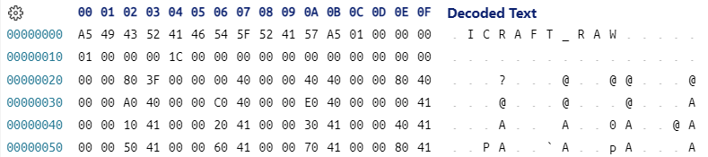

Icraft XIR#
为了和老的 IR 做区分和兼容， IR 升级之后需要有一个别的名字或者命名空间。
因此取名 XIR ， X 一般用来表示可扩展的（ eXtensible ）的意思，正好表达了其特性
XIR 和老的 IR 的相同之处是保留了 Network 、 Operation 和 Data 的概念不变，以及 Json&Raw 的序列化格式不变。
除了以上相同的地方，剩下的都不相同
说到底， XIR 的本质需求也是为了表达数据、算子和网络，因此我们从一个例子开始，看看它是如何快速的构建一个网络的
一 网络构建#
1using namespace icraft::xir;
2
3// 定义网络的名称、前端框架和框架版本
4auto network = Network("whatever", Framework::PYTORCH, "v1.9");
5
6// 构造网络的输入
7auto input_type = TensorType(FloatType::FP32(), { 1, 416, 416, 3 }, Layout::NHWC());
8auto input = Input(input_type);
9network.addOp(input);
10
11// 添加Conv2d算子
12auto weight_type = TensorType(FloatType::FP32(), { 3, 3, 416, 16 }, Layout::HWIO());
13auto weight = Params(weight_type);
14auto conv2d = Conv2d(input[0], weight, NullOpt, 1, 1, 1);
15network.addOp(conv2d);
16
17// 添加Relu算子
18auto relu = Relu(conv2d[0]);
19network.addOp(relu);
20
21//添加Maxpool算子
22auto maxpool = Maxpool(relu[0], 3, 2, 1, 1);
23network.addOp(maxpool);
24
25//构造输出
26auto output = Output(maxpool[0]);
27network.addOp(output);
28
29std::cout << std::setw(4) << network;
以上代码的输出如下：
1{
2 "_type_key": "icraft::xir::Network",
3 "framework_kind": "PYTORCH",
4 "framework_version": "v1.9",
5 "icraft_version": "v0.0.0",
6 "icraft_xir_version": "3.6.2.82",
7 "name": "whatever",
8 "ops": [
9 {
10 "_type_key": "icraft::xir::Input",
11 "compile_target": "@hostt",
12 "inputs": [],
13 "name": "",
14 "op_id": 0,
15 "outputs": [
16 {
17 "_type_key": "icraft::xir::Value",
18 "dtype": {
19 "_type_key": "icraft::xir::TensorType",
20 "element_dtype": "@fp(32)",
21 "layout": "@layout(NHWC)",
22 "merged_distrs": [],
23 "shape": [
24 1,
25 416,
26 416,
27 3
28 ]
29 },
30 "mtype": "@hostm",
31 "name": "",
32 "tags": {},
33 "v_id": 0
34 }
35 ],
36 "tags": {}
37 },
38 {
39 "_type_key": "icraft::xir::Conv2d",
40 "compile_target": "@hostt",
41 "cut_scale": "@scales([axis=-1])",
42 "dilation_height": 1,
43 "dilation_width": 1,
44 "groups": 1,
45 "inputs": [
46 {
47 "_type_key": "icraft::xir::Value",
48 "dtype": {
49 "_type_key": "icraft::xir::TensorType",
50 "element_dtype": "@fp(32)",
51 "layout": "@layout(NHWC)",
52 "merged_distrs": [],
53 "shape": [
54 1,
55 416,
56 416,
57 3
58 ]
59 },
60 "mtype": "@hostm",
61 "name": "",
62 "tags": {},
63 "v_id": 0
64 },
65 {
66 "_allow_no_data": false,
67 "_type_key": "icraft::xir::Params",
68 "dtype": {
69 "_type_key": "icraft::xir::TensorType",
70 "element_dtype": "@fp(32)",
71 "layout": "@layout(HWIO)",
72 "merged_distrs": [],
73 "shape": [
74 3,
75 3,
76 416,
77 16
78 ]
79 },
80 "mtype": "@hostm",
81 "name": "",
82 "tags": {},
83 "v_id": 1
84 }
85 ],
86 "name": "",
87 "op_id": 1,
88 "outputs": [
89 {
90 "_type_key": "icraft::xir::Value",
91 "dtype": {
92 "_type_key": "icraft::xir::TensorType",
93 "element_dtype": "@fp(32)",
94 "layout": "@layout(NHWC)",
95 "merged_distrs": [],
96 "shape": [
97 1,
98 416,
99 416,
100 16
101 ]
102 },
103 "mtype": "@hostm",
104 "name": "",
105 "tags": {},
106 "v_id": 2
107 }
108 ],
109 "pad_bottom": 1,
110 "pad_left": 1,
111 "pad_right": 1,
112 "pad_top": 1,
113 "padding_mode": "ZEROS",
114 "stride_height": 1,
115 "stride_width": 1,
116 "tags": {}
117 },
118 {
119 "_type_key": "icraft::xir::Relu",
120 "alpha": 0.0,
121 "compile_target": "@hostt",
122 "inputs": [
123 {
124 "_type_key": "icraft::xir::Value",
125 "dtype": {
126 "_type_key": "icraft::xir::TensorType",
127 "element_dtype": "@fp(32)",
128 "layout": "@layout(NHWC)",
129 "merged_distrs": [],
130 "shape": [
131 1,
132 416,
133 416,
134 16
135 ]
136 },
137 "mtype": "@hostm",
138 "name": "",
139 "tags": {},
140 "v_id": 2
141 }
142 ],
143 "max_value": "inf",
144 "name": "",
145 "op_id": 2,
146 "outputs": [
147 {
148 "_type_key": "icraft::xir::Value",
149 "dtype": {
150 "_type_key": "icraft::xir::TensorType",
151 "element_dtype": "@fp(32)",
152 "layout": "@layout(NHWC)",
153 "merged_distrs": [],
154 "shape": [
155 1,
156 416,
157 416,
158 16
159 ]
160 },
161 "mtype": "@hostm",
162 "name": "",
163 "tags": {},
164 "v_id": 3
165 }
166 ],
167 "tags": {},
168 "threshold": 0.0
169 },
170 {
171 "_type_key": "icraft::xir::Maxpool",
172 "compile_target": "@hostt",
173 "dilation_height": 1,
174 "dilation_width": 1,
175 "inputs": [
176 {
177 "_type_key": "icraft::xir::Value",
178 "dtype": {
179 "_type_key": "icraft::xir::TensorType",
180 "element_dtype": "@fp(32)",
181 "layout": "@layout(NHWC)",
182 "merged_distrs": [],
183 "shape": [
184 1,
185 416,
186 416,
187 16
188 ]
189 },
190 "mtype": "@hostm",
191 "name": "",
192 "tags": {},
193 "v_id": 3
194 }
195 ],
196 "name": "",
197 "op_id": 3,
198 "outputs": [
199 {
200 "_type_key": "icraft::xir::Value",
201 "dtype": {
202 "_type_key": "icraft::xir::TensorType",
203 "element_dtype": "@fp(32)",
204 "layout": "@layout(NHWC)",
205 "merged_distrs": [],
206 "shape": [
207 1,
208 208,
209 208,
210 16
211 ]
212 },
213 "mtype": "@hostm",
214 "name": "",
215 "tags": {},
216 "v_id": 4
217 }
218 ],
219 "pad_bottom": 1,
220 "pad_left": 1,
221 "pad_right": 1,
222 "pad_top": 1,
223 "pool_height": 3,
224 "pool_width": 3,
225 "stride_height": 2,
226 "stride_width": 2,
227 "tags": {}
228 },
229 {
230 "_type_key": "icraft::xir::Output",
231 "compile_target": "@hostt",
232 "inputs": [
233 {
234 "_type_key": "icraft::xir::Value",
235 "dtype": {
236 "_type_key": "icraft::xir::TensorType",
237 "element_dtype": "@fp(32)",
238 "layout": "@layout(NHWC)",
239 "merged_distrs": [],
240 "shape": [
241 1,
242 208,
243 208,
244 16
245 ]
246 },
247 "mtype": "@hostm",
248 "name": "",
249 "tags": {},
250 "v_id": 4
251 }
252 ],
253 "name": "",
254 "op_id": 4,
255 "outputs": [],
256 "tags": {}
257 }
258 ],
259 "params_bytes": 0,
260 "params_md5": "d41d8cd98f00b204e9800998ecf8427e",
261 "tags": {}
262}
二 序列化和反序列化#
2.1 输出流#
XIR 中的任何数据结构都可以通过输出流输出对应的 Json 字符串，就像上例中输出网络那样
1std::cout << input_type << std::endl;
2std::cout << weight << std::endl;
3std::cout << std::setw(4) << maxpool << std::endl;
以上代码的输出如下：
1{"_type_key":"icraft::xir::TensorType","element_dtype":"@fp(32)","layout":"@layout(NHWC)","merged_distrs":[],"shape":[1,416,416,3]}
2{"_allow_no_data":false,"_type_key":"icraft::xir::Params","dtype":{"_type_key":"icraft::xir::TensorType","element_dtype":"@fp(32)","layout":"@layout(HWIO)","merged_distrs":[],"shape":[3,3,416,16]},"mtype":"@hostm","name":"","tags":{},"v_id":1}
3{
4 "_type_key": "icraft::xir::Maxpool",
5 "compile_target": "@hostt",
6 "dilation_height": 1,
7 "dilation_width": 1,
8 "inputs": [
9 {
10 "_type_key": "icraft::xir::Value",
11 "dtype": {
12 "_type_key": "icraft::xir::TensorType",
13 "element_dtype": "@fp(32)",
14 "layout": "@layout(NHWC)",
15 "merged_distrs": [],
16 "shape": [
17 1,
18 416,
19 416,
20 16
21 ]
22 },
23 "mtype": "@hostm",
24 "name": "",
25 "tags": {},
26 "v_id": 3
27 }
28 ],
29 "name": "",
30 "op_id": 3,
31 "outputs": [
32 {
33 "_type_key": "icraft::xir::Value",
34 "dtype": {
35 "_type_key": "icraft::xir::TensorType",
36 "element_dtype": "@fp(32)",
37 "layout": "@layout(NHWC)",
38 "merged_distrs": [],
39 "shape": [
40 1,
41 208,
42 208,
43 16
44 ]
45 },
46 "mtype": "@hostm",
47 "name": "",
48 "tags": {},
49 "v_id": 4
50 }
51 ],
52 "pad_bottom": 1,
53 "pad_left": 1,
54 "pad_right": 1,
55 "pad_top": 1,
56 "pool_height": 3,
57 "pool_width": 3,
58 "stride_height": 2,
59 "stride_width": 2,
60 "tags": {}
61}
可以看出，默认输出的是紧凑的 Json 字符串，添加 std::setw(4) 可以把 Json 字符串格式化
2.2 输出文件#
同样的， XIR 中的任何数据结构都可以序列化的文件，但是一般我们只会序列化网络，因此这里只讲网络的序列化
和老的 IR 一样， XIR 使用 .json 文件存储网络的结构，使用 .params 文件存储网络的参数。
为了示例以上二者的序列化，我们给上例中 conv2d 算子的 weights 初始化一些数据，然后将网络序列化到文件
1// 定义网络的名称、框架和框架版本
2auto network = Network("whatever", Framework::PYTORCH, "v1.9");
3
4// 构造网络的输入
5auto input_type = TensorType(FloatType::FP32(), { 1, 416, 416, 3 }, Layout::NHWC());
6auto input = Input(input_type);
7network.addOp(input);
8
9// 添加Conv2d算子
10auto weight_type = TensorType(FloatType::FP32(), { 3, 3, 416, 16 }, Layout::HWIO());
11auto weight = Params(weight_type).fill<float>([](size_t i) { return (float)i; }); // 初始化参数
12auto conv2d = Conv2d(input[0], weight, NullOpt, 1, 1, 1);
13network.addOp(conv2d);
14
15// 添加Relu算子
16auto relu = Relu(conv2d[0]);
17network.addOp(relu);
18
19//添加Maxpool算子
20auto maxpool = Maxpool(relu[0], 3, 2, 1, 1);
21network.addOp(maxpool);
22
23//构造输出
24auto output = Output(maxpool[0]);
25network.addOp(output);
26
27//序列化到文件
28network.dumpJsonToFile("./whatever.json");
29network.dumpParamsToFile("./whatever.params");
30network.dumpMSGToFile("./whatever.imodel");
31network.dumpFlatToFile("./whatever.fb");
上例中使用的 fill 方法将 weight 初始化为从 0 开始的整数。
最后分别调用网络的 dumpJsonToFile 和 dumpParamsToFile 将网络结构和参数序列化到对应的文件
.json 文件中的内容和之前通过输出流打印的一致，而 .raw 文件中的内容如下：

可以看出，相比于老 IR 的 raw 文件， XIR 添加了魔数 \xA5ICRAFT_RAW\xA5 ，增强对文件的识别性
备注
v2.0.0 版本新增了 msgpack 序列化方式：该方式使用一个文件同时记录网络结构和参数，相比 Json&Raw 加载更快，但消耗内存更多
v3.7.0 版本新增了 flatbuffers 序列化方式：该方式全面优于 msgpack
2.3 反序列化#
XIR 的反序列化分为两步，首先从 Json 文件创建一个 Network 对象，然后该对象从 Raw 文件中加载参数即可
1auto net = Network::CreateFromJsonFile("./whatever.json");
2net.loadParamsFromFile("./whatever.raw")
3
4auto net2 = Network::CreateFromMSGFile("./whatever.imodel");
5auto net3 = Network::CreateFromFlatFile("./whatever.fb");
6
7auto loaded_conv2d = net.getOpById(1);
8auto loaded_weight = loaded_conv2d->inputs[1].cast<Params>();
9
10if (std::memcmp(loaded_weight.data<float>(), weight.data<float>(), weight.storageBytes()) == 0) {
11 fmt::print("weights loaded validate pass\n");
12}
13else {
14 fmt::print("weights loaded validate error\n");
15}
以上代码输出： weights loaded validate pass
2.4 惰性加载#
loadParamsFromFile 会将所有的参数从文件中加载到内存，这会给嵌入式设备的内存大小带来很大的压力。
因此 XIR 提供了 lazyLoadParamsFromFile 的方法惰性加载参数以节省内存
上例改为惰性加载如下：
1auto net = Network::CreateFromJsonFile("./whatever.json");
2net.lazyLoadParamsFromFile ("./whatever.raw");
3
4auto loaded_conv2d = net.getOpById(1);
5auto loaded_weight = loaded_conv2d->inputs[1].cast<Params>();
6
7if (std::memcmp(loaded_weight.data<float>(), weight.data<float>(), weight.storageBytes()) == 0) {
8 fmt::print("weights loaded validate pass\n");
9}
10else {
11 fmt::print("weights loaded validate error\n");
12}
以上代码输出： weights loaded validate pass
可以看出，使用惰性加载无需任何额外的心智负担，只需要换一个加载参数的 API 即可
三 数据类型#
3.1 MemType#
MemType 表达了存储的类型，即数据存储在什么地方。目前从 MemType 派生了以下几个存储类型：
HostMem：表示数据存储在Host上，其字符串表达为hostmOnChipMem：表示数据存储在OCM上，其字符串表达为ocm(x)，其中x表示地址ExternalMem：表示数据存储在ETM``上，其字符串表达为 ``etm(x)，其中x表示地址ChunkMem：表示基于Chunk的虚拟内存，其字符串表达为chunk(id@offset)，其中id表示ID，offset表示偏移
比如我们将开头例子中的 input_type 改为在不同的 MemType 上构造：
1TensorType ttype(FloatType::FP32(), { 1, 416, 416, 3 }, Layout::NHWC());
2
3// 默认为HostMem
4Value etm_value(ttype);
5
6// 构造OCM上的Value
7Value ocm_value(ttype, OnChipMem(1234));
8
9// 构造ETM上的TensorType
10FloatImm etm_flt(3.14, ExternalMem(5678));
11
12// 构造临时放置于虚拟内存上的Params
13Params params("params", ttype, ChunkMem(1234, 100));
14
15std::cout << std::setw(4) << etm_value << std::endl;
16std::cout << std::setw(4) << ocm_value << std::endl;
17std::cout << std::setw(4) << etm_flt << std::endl;
18std::cout << std::setw(4) << params << std::endl;
以上代码的输出如下：
1{
2 "_type_key": "icraft::xir::Value",
3 "dtype": {
4 "_type_key": "icraft::xir::TensorType",
5 "element_dtype": "@fp(32)",
6 "layout": "@layout(NHWC)",
7 "merged_distrs": [],
8 "shape": [
9 1,
10 416,
11 416,
12 3
13 ]
14 },
15 "mtype": "@hostm",
16 "name": "",
17 "tags": {},
18 "v_id": -10579
19}
20{
21 "_type_key": "icraft::xir::Value",
22 "dtype": {
23 "_type_key": "icraft::xir::TensorType",
24 "element_dtype": "@fp(32)",
25 "layout": "@layout(NHWC)",
26 "merged_distrs": [],
27 "shape": [
28 1,
29 416,
30 416,
31 3
32 ]
33 },
34 "mtype": "@ocm(1234)",
35 "name": "",
36 "tags": {},
37 "v_id": -10580
38}
393.14
40{
41 "_allow_no_data": false,
42 "_type_key": "icraft::xir::Params",
43 "dtype": {
44 "_type_key": "icraft::xir::TensorType",
45 "element_dtype": "@fp(32)",
46 "layout": "@layout(NHWC)",
47 "merged_distrs": [],
48 "shape": [
49 1,
50 416,
51 416,
52 3
53 ]
54 },
55 "mtype": "@chunk(1234@100)",
56 "name": "params",
57 "tags": {},
58 "v_id": -10581
59}
3.2 DataType#
3.2.1 普通类型#
顾名思义， DataType 表达了数据的类型。目前从 DataType 派生了以下几个数据类型：
ScalarType：表示标量类型，是所有标量类型的基类IntegerType：表示整型类型，可以表达任意位数的有符号和无符号整型，字符串表达为sint(x)或uint(x)，其中x表示位数FloatType：表示浮点类型，可以表达IEEE标准中的几种浮点类型，字符串从表达为fp(x)或bf(x)，其中x表示位数TensorType：表示张量类型，包含element_dtype、shape、layout和chann_distr等属性
1// 一些IntegerType
2auto sint8 = IntegerType::SInt8();
3auto sint64 = IntegerType::SInt64();
4auto uint12 = IntegerType::UInt(12);
5
6std::cout << "sint8: " << sint8 << std::endl;
7std::cout << "sint64: " << sint64 << std::endl;
8std::cout << "uint12: " << uint12 << std::endl;
9
10// 一些FloatType
11auto fp32 = FloatType::FP32();
12auto bf16 = FloatType::BF16();
13
14std::cout << "fp32: " << fp32 << std::endl;
15std::cout << "bf16: " << bf16 << std::endl;
16
17// 一些TensorType
18auto ttype = TensorType(IntegerType::SInt64(), {1024}, Layout::NHWC());
19
20std::cout << std::setw(4) << ttype << std::endl;
以上示例代码构造了一些常见的数据类型，其输出如下：
1sint8: "@sint(8)"
2sint64: "@sint(64)"
3uint12: "@uint(12)"
4fp32: "@fp(32)"
5bf16: "@bf(16)"
6{
7 "_type_key": "icraft::xir::TensorType",
8 "element_dtype": "@sint(64)",
9 "layout": "@layout(NHWC)",
10 "merged_distrs": [],
11 "shape": [
12 1024
13 ]
14}
维度分布之MergedAxisDistr:
MergedAxisDistr 表示任意多个维度融合的分布，比如一个 Tensor 的 shape 为 [1,2,3,3,32] ，那么可以使用 MergedAxisDistr 描述 [1,4] 两个维度融合后 64 个元素是否有效。
其使用掩码来表示元素是否有效，掩码的数量和通元素相同。当掩码为 1 时表示该通道有效，为0表示无效。
MergedAxisDistr 有两个属性：
merged_axis：表示被融合的维度索引列表，比如[1,4]valid_mask：一个布尔数组表示每个元素是否有效
MergedAxisDistr 提供了以下方法来设置和访问有效/无效通道：
append:追加通道，可以设置追加的通道是否有效setValid：标记[start, end)范围内有效setUnvalid：标记[start, end)范围内无效validSections：获取所有的有效片段，返回有效片段的vector，其中每个元素为一个pair，表示[pair.first, pair.second)范围是有效的unvalidSections：获取所有的无效片段，返回无效片段的vector，其中每个元素为一个pair，表示[pair.first, pair.second)范围是无效的allChannSections：获取所有的片段，返回表示片段的vector，其中每个元素为一个tuple，tuple的三个元素分别表示该片段的[开始, 结束)以及是否有效totalValidNum：获取所有有效元素数totalUnvalidNum：获取所有无效元素数totalNum：获取所有元素数isValid：检查指定索引的元素是否有效
MergedAxisDistr 使用 merged_distr([2, 3]:{u:[0, 100), v:[100, 1024)}) 的形式来序列化，其中 [2, 3] 表示被融合的维度索引， v 表示 valid ， u 表示 unvalid 。
TensorType使用 MergedAxisDistr 数组即 Array<MergedAxisDistr> merged_distrs 来表示所有融合维度的分布。TensorType可以使用以下方法操作融合维度分布：
createAddMergedDistr: 创建并添加维度分布，如果维度已经存在则抛出异常getMergedDistr：获取指定的融合维度分布mutateMergedDistr：调整指定的融合维度分布，如果不存在则抛出异常
具体的使用示例如下：
1// 构造一个MergedAxisDistr，绑定第2,3维度，默认所有掩码都为true
2 auto axis_distr = MergedAxisDistr({ 2,3 }, 1024);
3
4 // 设置通道[0, 100]为无效
5 axis_distr.setUnvalid(0, 100);
6 std::cout << std::setw(4) << axis_distr << std::endl;
7 // 设置通道[1000, 1023]为无效
8 axis_distr.setUnvalid(1000, 1023);
9 std::cout << std::setw(4) << axis_distr << std::endl;
10 //设置通道888为无效
11 axis_distr.setUnvalid(888, 888);
12 std::cout << std::setw(4) << axis_distr << std::endl;
13
14 axis_distr.append(256, false);
15 auto other = Array<bool>(128, true);
16 axis_distr.append(other);
17 std::cout << std::setw(4) << axis_distr << std::endl;
18
19 // 获取所有的通道片段
20 auto all_sections = axis_distr.allSections();
21
22 // 打印通道片段
23 for (auto&& [s, e, v] : all_sections) {
24 fmt::print("[{}, {}): is_valid({})\n", s, e, v);
25 }
26
27// 创建一个TensorType，其默认融合维度分布为空
28 auto host_ttype = TensorType(FloatType::FP32(), { 1, 2, 416, 416, 32 }, Layout::NHWC());
29 REQUIRE(host_ttype->merged_distrs.size() == 0);
30
31 // 创建并添加一个融合维度分布，指定维度为[1, 4]
32// 创建后host_ttype的merged_distrs添加一个MergedAxisDistr
33// 其merged_axis为[1, 4]，总共有64(2*32)个掩码，所有掩码都为true
34 auto axis_distr3 = host_ttype.createAddMergedDistr({1, 4});
35 // 上面的方法会返回被创建的MergedAxisDistr引用，我们可以操作它
36 REQUIRE(axis_distr3.isValid(31));
37 axis_distr3.setUnvalid(2, 3);
38 REQUIRE(!axis_distr3.isValid(2));
39
40 // 获取指定维度的分布，如果指定的融合维度不存在则返回NullOpt
41 // 存在则返回对应的Optional<MergedAxisDistr>
42 auto axis_distr4 = host_ttype.getMergedDistr({1, 4});
43 REQUIRE(axis_distr3 == axis_distr4.value());
44
45 // 不存在则返回NullOpt
46 auto axis_distr5 = host_ttype.getMergedDistr({ 2, 3 });
47 REQUIRE(!axis_distr5.has_value());
48
49 // 修改指定的维度分布，不存在会抛出异常
50 host_ttype.mutateMergedDistr({1, 4}, 0, 32, false);
51 REQUIRE(!axis_distr3.isValid(31));
52
53 // 再创建一个融合维度分布，创建后host_ttype有两个分布
54 auto axis_distr6 = host_ttype.createAddMergedDistr({ 2, 3 });
55 REQUIRE(host_ttype->merged_distrs.size() == 2);
56
57 std::cout << std::setw(4) << host_ttype << std::endl;
以上示例输出如下：
1"merged_distr([2, 3]:{u:[0, 100), v:[100, 1024)})"
2"merged_distr([2, 3]:{u:[0, 100), v:[100, 1000), u:[1000, 1023), v:[1023, 1024)})"
3"merged_distr([2, 3]:{u:[0, 100), v:[100, 1000), u:[1000, 1023), v:[1023, 1024)})"
4"merged_distr([2, 3]:{u:[0, 100), v:[100, 1000), u:[1000, 1023), v:[1023, 1024), u:[1024, 1280), v:[1280, 1408)})"
5
6[0, 100): is_valid(false)
7[100, 1000): is_valid(true)
8[1000, 1023): is_valid(false)
9[1023, 1024): is_valid(true)
10[1024, 1280): is_valid(false)
11[1280, 1408): is_valid(true)
12
13axis_distr1:1408 "merged_distr([2, 3]:{u:[0, 100), v:[100, 1000), u:[1000, 1023), v:[1023, 1024), u:[1024, 1280), v:[1280, 1408)})"
14
15{
16 "_type_key": "icraft::xir::TensorType",
17 "element_dtype": "fp(32)",
18 "layout": "layout(NHWC)",
19 "merged_distrs": [
20 "merged_distr([1, 4]:{u:[0, 32), v:[32, 64)})",
21 "merged_distr([2, 3]:{v:[0, 173056)})"
22 ],
23 "mtype": "hostm",
24 "shape": [
25 1,
26 2,
27 416,
28 416,
29 32
30 ]
31}
3.2.2 量化类型#
Icraft 的量化涉及到的概念比较多，有两个方面的原因：
其一是 Icraft 采用了先归一化再量化的方式，引入了归一化的概念和表达；
其二是后端硬件对 scale 的支持不同，比如布衣支持的是 \(m×2^{-exp}\) ，而诸葛支持的是 BF16
为了表达清楚以上这些概念， XIR 的引入了以下量化相关的类型：
BaseQuantizedType：所有量化相关类型的基类，也是ScalarType的子类，即所有量化的类型表达的都是标量。它具有两个属性，也是所有量化相关类型需要明确的：storage_dtype：存储类型，即量化的目标类型expressed_dtype：表达类型，即数据的原始类型
CalibratedType：表示校准后的数据类型，除了以上两个基本属性外，还表达了一些校准信息：min：统计的最小值max：统计的最大值sat：统计的饱和点
NormalizedType：表示归一化后的数据类型，除了基本属性外，主要表达归一化系数：normratio：归一化系数
QuantizedType：表示量化后的数据类型，除了基本属性外，主要表达scale:scale：量化的缩放因子
NormalizedQuantizedType：表示采用归一化量化的数据类型，同时表达了normratio和scale
上面两种量化类型的 scale 属性都是 QuantizedScale 类型，该类型表示量化缩放因子。
目前只派生了一个子类 ExpQuantizedScaleNode ，表示 \(m×2^{-exp}`形式的 ``scale`\) ，其字符串表达为 exp_scale(<m, exp>, origin_scale)
下面是一些量化相关类型的示例：
1// Calibrated
2auto calibrated_sint8 = CalibratedType(-3.6, 4.8, 4.7, IntegerType::SInt8());
3auto calibrated_bf16 = CalibratedType(-3.6, 4.8, 4.7, FloatType::BF16());
4
5std::cout << "calibrated_sint8: " << std::setw(4) << calibrated_sint8 << std::endl;
6std::cout << "calibrated_bf16: " << std::setw(4) << calibrated_bf16 << std::endl;
7
8// Normalized
9auto normalized_sint16 = NormalizedType({ 1.1, 2.2, 3.3 }, IntegerType::SInt16());
10auto normalized_ttype = TensorType(normalized_sint16, { 1024 }, Layout::NHWC());
11
12std::cout << "normalized_ttype: " << std::setw(4) << normalized_ttype << std::endl;
13
14// Quantized
15auto quant_sint16 = NormalizedQuantizedType(
16 normalized_sint16,
17 ExpQuantizedScaleArray({ 3, 4 }, { 3, 4 }, { 0.377, 0.27 })
18);
19
20std::cout << "quant_sint16: " << std::setw(4) << quant_sint16 << std::endl;
以上代码的输出为：
1calibrated_sint8: {
2 "_type_key": "icraft::xir::CalibratedType",
3 "expressed_dtype": "@fp(32)",
4 "max": [
5 4.8
6 ],
7 "min": [
8 -3.6
9 ],
10 "sat": [
11 4.7
12 ],
13 "storage_dtype": "@sint(8)"
14}
15calibrated_bf16: {
16 "_type_key": "icraft::xir::CalibratedType",
17 "expressed_dtype": "@fp(32)",
18 "max": [
19 4.8
20 ],
21 "min": [
22 -3.6
23 ],
24 "sat": [
25 4.7
26 ],
27 "storage_dtype": "@bf(16)"
28}
29normalized_ttype: {
30 "_type_key": "icraft::xir::TensorType",
31 "element_dtype": {
32 "_type_key": "icraft::xir::NormalizedType",
33 "expressed_dtype": "@fp(32)",
34 "normratio": "@norm_ratios([axis=-1]1.1,2.2,3.3)",
35 "storage_dtype": "@sint(16)"
36 },
37 "layout": "@layout(NHWC)",
38 "merged_distrs": [],
39 "shape": [
40 1024
41 ]
42}
43quant_sint16: {
44 "_type_key": "icraft::xir::NormalizedQuantizedType",
45 "expressed_dtype": "@fp(32)",
46 "normratio": "@norm_ratios([axis=-1]1.1,2.2,3.3)",
47 "scale": "@exp_scales([axis=-1]3/3/0.377,4/4/0.27)",
48 "storage_dtype": "@sint(16)",
49 "zero_points": []
50}
3.3 TargetType#
TargetType 表示算子的编译目标类型，目前从 TargetType 派生了以下几个编译目标类型：
HostTarget：表示算子的编译目标为HostFPGATarget：表示算子的编译目标为FPGACustomTarget：表示算子的编译目标为自定义BuyiTarget：表示算子的编译目标为布衣架构的加速器ZhugeTarget：表示算子的编译目标为诸葛架构的加速器
四 Layout#
对于老的 IR 来说， Layout 是个老生常谈的话题，究其原因是因为对其没有一个明确的定义。
而且原来的 Format 表达能力不够，新加的 BYLayout 含义比较隐晦，所以经常引起讨论。
XIR 中明确定义 Layout 是对 TensorType 的 shape 属性的诠释，即 Layout 诠释了 Tensor 中每一维的含义。
比如对于一个四维张量来说， layout=NHWC 说明了它的最后一维表示通道，这对于卷积等算子的实现是必不可少的
XIR 中 Layout 的设计致力于诠释一切(关心的)维度，而避免使用 BYLayout 这种隐晦的表达
Layout 使用单个字符表示的坐标轴来解释 Tensor 的每一维是什么意义，目前有效的坐标轴为 "NHWDCIO*nhwdcio"
备注
NHWDCIO 分别表示 Batch 、高度、宽度、深度、通道、输入(通道)、输出(通道)
其中大写字母表示没被划分或划分后的 Tile 数量的坐标轴，小写字母表示做了划分后的单位坐标轴，后面跟数字表示单位长度， * 表示不关心的坐标轴。
例如 NCHWc32,OIHWi32o32，N**Cc4 等都是有效的表达
如果我们想要获取 NCHW 和 NHWC 这两种排布通道上的大小，那么需要判断其 Layout 是 NCHW 时取第二维，是 NHWC 取最后一维。
一般情况下，我们可能不关心一个张量的具体排布是什么，只想知道某个坐标轴的大小，这时可以使用 TensorType 的 getAxis 方法，比如 getAxis(’C’) 就能获取通道数量。
以下是 Layout 的一些使用示例：
1auto layout1 = Layout::NCHW();
2auto layout2 = Layout::OIHW();
3auto layout3 = Layout::Init().N().H().C().D();
4auto layout4 = Layout::Init().N().X().X().D();
5auto layout5 = Layout::Init().N().X(2).D().d(32).n(4);
6
7auto layout6 = Layout::NHWC();
8auto layout7 = Layout("NC**c32");
9
10std::cout << "layout1: " << std::setw(4) << layout1 << std::endl;
11std::cout << "layout2: " << std::setw(4) << layout2 << std::endl;
12std::cout << "layout3: " << std::setw(4) << layout3 << std::endl;
13std::cout << "layout4: " << std::setw(4) << layout4 << std::endl;
14std::cout << "layout5: " << std::setw(4) << layout5 << std::endl;
15
16std::cout << "layout6.C: " << std::setw(4) << layout6.getIndexOf('C') << std::endl;
17std::cout << "layout7.c: " << std::setw(4) << layout7.getIndexOf('c') << std::endl;
以上代码的输出为：
1layout1: "@layout(NCHW)"
2layout2: "@layout(OIHW)"
3layout3: "@layout(NHCD)"
4layout4: "@layout(N**D)"
5layout5: "@layout(N**Dd32n4)"
6layout6.C: 3
7layout7.c: 4
五 算子#
算子是 XIR 中的基本单位，具有输入和输出，以及一系列属性
5.1 算子的声明#
整个 XIR 都采用了数据和逻辑分离的方式来实现，因此定义一个算子需要分别定义它的数据类和逻辑类。
在数据类型中定义算子的属性，而在逻辑类中定义一些方法
以卷积为例，其定义如下：
1// 数据类使用OpNodeBase以CRTP的方式派生
2// 然后使用ICRAFT_DECLARE_ATTRS和ICRAFT_ATTR_FIELD声明属性
3// ICRAFT_ATTR_FIELD宏可以设置属性的默认值，上下边界和描述
4class Conv2dNode : public OpNodeBase<Conv2dNode, OneResult> {
5 public:
6 int64_t stride_width; ///< 卷积滑动宽度，默认为1
7 int64_t stride_height; ///< 卷积滑动高度，默认为1
8 int64_t pad_top; ///< 卷积上方Pad，默认为0
9 int64_t pad_bottom; ///< 卷积下方Pad，默认为0
10 int64_t pad_left; ///< 卷积左方Pad，默认为0
11 int64_t pad_right; ///< 卷积右方Pad，默认为0
12 int64_t dilation_width; ///< 卷积膨胀宽度，默认为1
13 int64_t dilation_height; ///< 卷积膨胀高度，默认为1
14 int64_t groups; ///< 卷积分组数量，默认为1
15
16 ICRAFT_DECLARE_ATTRS(Conv2dNode) {
17 ICRAFT_ATTR_FIELD(stride_width).set_default(1).set_lower_bound(1);
18 ICRAFT_ATTR_FIELD(stride_height).set_default(1).set_lower_bound(1);
19 ICRAFT_ATTR_FIELD(pad_top).set_default(0).set_lower_bound(0);
20 ICRAFT_ATTR_FIELD(pad_bottom).set_default(0).set_lower_bound(0);
21 ICRAFT_ATTR_FIELD(pad_left).set_default(0).set_lower_bound(0);
22 ICRAFT_ATTR_FIELD(pad_right).set_default(0).set_lower_bound(0);
23 ICRAFT_ATTR_FIELD(dilation_width).set_default(1).set_lower_bound(1);
24 ICRAFT_ATTR_FIELD(dilation_height).set_default(1).set_lower_bound(1);
25 ICRAFT_ATTR_FIELD(groups).set_default(1);
26 }
27};
28
29// 逻辑类使用OpBase以CRTP的方式派生，主要定义了一些构造函数
30// 需要指定其对应的数据类Conv2dNode
31// 逻辑类可以看做是数据类的一个智能指针或者引用
32class Conv2d : public OpBase<Conv2d, Conv2dNode> {
33 public:
34 /** 默认构造函数 */
35 Conv2d() = default;
36
37 Conv2d(
38 Value input,
39 Value weights,
40 Optional<Value> bias,
41 int64_t stride_width,
42 int64_t stride_height,
43 int64_t pad_top,
44 int64_t pad_bottom,
45 int64_t pad_left,
46 int64_t pad_right,
47 int64_t dilation_width,
48 int64_t dilation_height,
49 int64_t groups = 1
50 );
51
52 Conv2d(
53 Value input,
54 Value weights,
55 Optional<Value> bias,
56 int64_t stride,
57 int64_t pad_top_bottom,
58 int64_t pad_left_right,
59 int64_t dilation,
60 int64_t groups = 1
61 ) : Conv2d(
62 input,
63 weights,
64 bias,
65 stride,
66 stride,
67 pad_top_bottom,
68 pad_top_bottom,
69 pad_left_right,
70 pad_left_right,
71 dilation,
72 dilation,
73 groups
74 ) {}
75
76 Conv2d(
77 Value input,
78 Value weights,
79 Optional<Value> bias,
80 int64_t stride,
81 int64_t pad,
82 int64_t dilation,
83 int64_t groups = 1
84 ) : Conv2d(
85 input,
86 weights,
87 bias,
88 stride,
89 pad,
90 pad,
91 dilation,
92 groups
93 ) {}
94};
5.2 属性的声明和检查#
每一个算子的属性都需要使用宏 ICRAFT_ATTR_FIELD 来声明，同时可以设置属性的一些参数，包括：
set_default：设置属性的默认值set_lower_bound：设置属性的下边界set_upper_bound：设置属性的上边界set_describe：设置属性的描述
每一个算子都实现了 validate 方法，其中默认的实现是检查算子的属性以及符合设置的边界条件。
该方法可以在算子实现中被覆盖实现，比如我们为 Conv2d 添加覆盖实现：
1class Conv2dNode : public OpNodeBase<Conv2dNode, OneResult> {
2public:
3 virtual void validate() const override {
4
5 // 检查：Operation通用检查
6 OperationNode::validate();
7
8 // 检查：算子的输入是否大于等于2
9 ICRAFT_CHECK(this->inputs.size() >= 2);
10 }
11}
5.3 OpTrait#
OpTrait 表达了算子的一些特质，帮助我们更方便正确的描述算子，以及为算子添加一些功能和检查。
目前只定义了以下 OpTrait：
OneResult，表示该算子只有一个输出结果IsActivate，标记算子是激活算子OutputLike，标记算子是输出类型的算子
OperationNode 提供了一些方法来判断算子是否混入了以上 OpTrait :
hasOneResult: 检查算子是否只有一个输出，即是否具有特质OneResultisActivate: 检查算子是否是激活算子，即是否具有特质IsActivateisOutputLike: 检查算子是否是输出类的算子，即是否具有特质OutputLike
示例如下：
1TEST_CASE("op_trait", "[op]") {
2 auto input_type = TensorType(FloatType::FP32(), { 1, 32, 32, 3 }, Layout("NHWC"));
3 auto input = Input(input_type);
4
5 Operation reshape = Reshape(input[0], { 1, 3072 }, Layout("NC"));
6 auto split = Split(reshape[0], {1536, 1536});
7 auto relu = Relu(split[0]);
8 auto prelu = Prelu(split[1], Params::Init());
9 auto softmax = Softmax(prelu);
10 auto region = Region(prelu, 0, 0, 0, 0, 0, 0, 0, {});
11
12 auto flatten = Operation::Create("whatever::Flatten", "../x64/Debug/whatever_Flatten.dll");
13 flatten.setAttr("unused", Array<int64_t>{ 1, 2, 3, 4 });
14 flatten.addInput(relu);
15
16 REQUIRE(reshape->hasOneResult());
17 REQUIRE(flatten->hasOneResult());
18 REQUIRE(!split->hasOneResult());
19
20 REQUIRE(relu->isActivate());
21 REQUIRE(prelu->isActivate());
22 REQUIRE(!input->isActivate());
23
24 REQUIRE(!softmax->isOutputLike());
25 REQUIRE(region->isOutputLike());
26}
5.4 类型推断#
为了简化构建网络的逻辑， XIR 为算子引入了类型推断。
在定义算子时可以为特定的后端注册类型推断函数，还是以 Conv2d 为例：
1ICRAFT_REGISTER_OP_NODE(Conv2dNode)
2.set_tinfer<Conv2dNode, HostTarget>([](const auto* op) {
3 op->validate(); // 首先检查是否合法，检查过后以下所有推断逻辑都默认算子参数合法
4 auto input = op->inputs[0];
5 auto input_dtype = input.dtype();
6 auto input_n = input_dtype.getDim(0);
7 auto input_h = input_dtype.getDim(1);
8 auto input_w = input_dtype.getDim(2);
9 auto input_c = input_dtype.getDim(3);
10
11 auto weights = op->inputs[1];
12 auto weights_dtype = weights.dtype();
13 auto weights_h = weights_dtype.getDim(0);
14 auto weights_w = weights_dtype.getDim(1);
15 auto weights_i = weights_dtype.getDim(2);
16 auto weights_o = weights_dtype.getDim(3);
17
18 auto output_n = input_n;
19 int64_t ouput_h = ((input_h + op->pad_top + op->pad_bottom - op->dilation_height * (weights_h - 1) - 1)
20 / (double)op->stride_height) + 1ull;
21 int64_t ouput_w = ((input_w + op->pad_left + op->pad_right - op->dilation_width * (weights_w - 1) - 1)
22 / (double)op->stride_width) + 1ull;
23 auto output_c = weights_o;
24
25 auto output_dtype = TensorType(
26 input_dtype->element_dtype,
27 { output_n, ouput_h, ouput_w, output_c },
28 input_dtype->layout,
29 input_dtype->mtype
30 );
31
32 return Array<TensorType>{ output_dtype };
33});
如果一个算子注册了类型推断函数，那么添加算子时就不用关心算子的输出了，比如开头的例子：
1... ...
2
3// 添加Conv2d算子
4auto weight_type = TensorType(FloatType::FP32(), { 3, 3, 416, 16 }, Layout::HWIO());
5auto weight = Params(weight_type);
6auto conv2d = Conv2d(input[0], weight, NullOpt, 1, 1, 1);
7network.addOp(conv2d); // addOp时会自动调用类型推断函数来添加算子的输出
8
9... ...
当然，如果没有类型推断也是可以构建网络的，上例要改为：
1... ...
2
3// 添加Conv2d算子
4auto weight_type = TensorType(FloatType::FP32(), { 3, 3, 416, 16 }, Layout::HWIO());
5auto weight = Params(weight_type);
6auto conv2d = Conv2d(input[0], weight, NullOpt, 1, 1, 1);
7auto output_type = TensorType(FloatType::FP32(), { 1, 416, 416, 16 }, Layout::NHWC());
8conv2d.inferResults(output_type);
9network.addOp(conv2d);
10
11... ...
5.5 特别说明#
XIR 的算子定义和老的 IR 相比有以下几点不同：
Input算子只表达网络的入口，不再承担前处理的表达。可以把网络认为是一个函数，而Input算子是它的参数声明。 前处理由额外的算子来表达，比如Multiply和Add分别实现PreScale和PreMean, 而原来的preprocessor用Resize算子来实现，channswap由SwapOrder算子来实现同样的
Output算子只表达网络的出口，相当于函数的返回值Conv2d的weight和bias作为算子的输入而不是属性，统一了原来的Conv2dFtmp和Conv2dConstMatmul同上，另外不再支持InnerProduct，其可以由Matmul实现同样的，
Multiply有两个输入，可以是Value或Params，统一了MultiplyFtmp和MultiplyConstEltwise去除了原来实现中对量化后normratio（即qt_normratio和scale）的表达，量化的表达可以通过改变alpha和beta的值和数据类型来实现。alpha和beta被定义为ScalarImm类型，量化前使用FloatImm来表达，量化后使用IntImm来表达，其dtype为NormalizedQuantizedType
以此类推，我们尽量不在算子的属性中定义量化相关的东西。否则随着后端的增加，我们要不断添加不同后端的量化表示，不利于扩展和维护。
5.6 自定义算子#
请参考 第8章《自定义算子》部分
六 网络#
XIR 中一个网络是由一系列算子组成的，这些算子通过输入输出相互连接，构成了一个有向无环图。
网络中的算子是存储在 Array 容器中的，其在 Array 中的顺序代表了执行顺序
网络主要有以下几个属性：
name：网络名称framework_kind：前端框架的种类framework_version：前端框架的版本icraft_xir_version：XIR的版本icraft_version：Icraft版本params_bytes：网络中所有参数的字节大小params_md5：参数的MD5，用于校验ops：网络的算子列表
6.1 网络的构造#
如何构造一个网络在开头的例子中已经展现了，所以此处不在赘述
6.2 增删查改#
网络中涉及到 CRUD 的 API 主要有以下几个：
addOp：添加算子到列表尾部insertOpById：将算子插入到指定ID的算子前面insertOp：将算子插入到指定的index前面removeOpById：移除指定ID的算子removeOp：移除符合条件的算子getOpById：获取指定ID的算子replaceOpById：将指定ID的算子替换为其他算子
下面的例子展示了网络中增删查改的一些 API 和使用方法，更多的方法请参考模式匹配章节：
1auto network = Network("whatever", Framework::PYTORCH, "v1.9");
2
3auto input_type = TensorType(FloatType::FP32(), { 1, 416, 416, 3 }, Layout::NHWC());
4auto input = Input(input_type);
5input.setId(100); // 为算子指定大于0的ID，网络会使用该ID，否则网络会自动生成ID
6network.addOp(input);
7
8auto weight_type = TensorType(FloatType::FP32(), { 3, 3, 416, 16 }, Layout::HWIO());
9auto weight = Params(weight_type).fill<float>([](size_t i) { return (float)i; });
10auto conv2d = Conv2d(input[0], weight, NullOpt, 1, 1, 1);
11network.addOp(conv2d);
12
13auto relu = Relu(conv2d[0]);
14network.addOp(relu);
15
16auto maxpool = Maxpool(relu[0], 3, 2, 1, 1);
17network.addOp(maxpool);
18
19auto output = Output(maxpool[0]);
20network.addOp(output);
21
22// 获取输入算子
23std::cout << "inputOp: " << std::setw(4) << network->ops[0] << std::endl;
24// 获取指定ID的算子
25std::cout << "op(1): " << std::setw(4) << network.getOpById(1) << std::endl;
26
27// 删除算子，以下四种写法结果是一样的，都是删除了relu算子
28// network.removeOpById(relu->op_id);
29// network.removeOp([](auto op) { return op.is<Relu>(); });
30// network.removeOp([](auto op) { return op->hasAttr("threshold"); });
31network.removeOp([](auto op) { return op->getAttr("threshold").value_or<double>(-1.f) == 0; });
32
33std::cout << std::setw(4) << network << std::endl;
以上代码的输出如下：
1inputOp: {
2 "_type_key": "icraft::xir::Input",
3 "compile_target": "@hostt",
4 "inputs": [],
5 "name": "",
6 "op_id": 100,
7 "outputs": [
8 {
9 "_type_key": "icraft::xir::Value",
10 "dtype": {
11 "_type_key": "icraft::xir::TensorType",
12 "element_dtype": "@fp(32)",
13 "layout": "@layout(NHWC)",
14 "merged_distrs": [],
15 "shape": [
16 1,
17 416,
18 416,
19 3
20 ]
21 },
22 "mtype": "@hostm",
23 "name": "",
24 "tags": {},
25 "v_id": 0
26 }
27 ],
28 "tags": {}
29}
30op(101): {
31 "_type_key": "icraft::xir::Conv2d",
32 "compile_target": "@hostt",
33 "cut_scale": "@scales([axis=-1])",
34 "dilation_height": 1,
35 "dilation_width": 1,
36 "groups": 1,
37 "inputs": [
38 {
39 "_type_key": "icraft::xir::Value",
40 "dtype": {
41 "_type_key": "icraft::xir::TensorType",
42 "element_dtype": "@fp(32)",
43 "layout": "@layout(NHWC)",
44 "merged_distrs": [],
45 "shape": [
46 1,
47 416,
48 416,
49 3
50 ]
51 },
52 "mtype": "@hostm",
53 "name": "",
54 "tags": {},
55 "v_id": 0
56 },
57 {
58 "_allow_no_data": false,
59 "_type_key": "icraft::xir::Params",
60 "dtype": {
61 "_type_key": "icraft::xir::TensorType",
62 "element_dtype": "@fp(32)",
63 "layout": "@layout(HWIO)",
64 "merged_distrs": [],
65 "shape": [
66 3,
67 3,
68 416,
69 16
70 ]
71 },
72 "mtype": "@hostm",
73 "name": "",
74 "tags": {},
75 "v_id": 1
76 }
77 ],
78 "name": "",
79 "op_id": 101,
80 "outputs": [
81 {
82 "_type_key": "icraft::xir::Value",
83 "dtype": {
84 "_type_key": "icraft::xir::TensorType",
85 "element_dtype": "@fp(32)",
86 "layout": "@layout(NHWC)",
87 "merged_distrs": [],
88 "shape": [
89 1,
90 416,
91 416,
92 16
93 ]
94 },
95 "mtype": "@hostm",
96 "name": "",
97 "tags": {},
98 "v_id": 2
99 }
100 ],
101 "pad_bottom": 1,
102 "pad_left": 1,
103 "pad_right": 1,
104 "pad_top": 1,
105 "padding_mode": "ZEROS",
106 "stride_height": 1,
107 "stride_width": 1,
108 "tags": {}
109}
110{
111 "_type_key": "icraft::xir::Network",
112 "framework_kind": "PYTORCH",
113 "framework_version": "v1.9",
114 "icraft_version": "v0.0.0",
115 "icraft_xir_version": "3.6.2.82",
116 "name": "whatever",
117 "ops": [
118 {
119 "_type_key": "icraft::xir::Input",
120 "compile_target": "@hostt",
121 "inputs": [],
122 "name": "",
123 "op_id": 100,
124 "outputs": [
125 {
126 "_type_key": "icraft::xir::Value",
127 "dtype": {
128 "_type_key": "icraft::xir::TensorType",
129 "element_dtype": "@fp(32)",
130 "layout": "@layout(NHWC)",
131 "merged_distrs": [],
132 "shape": [
133 1,
134 416,
135 416,
136 3
137 ]
138 },
139 "mtype": "@hostm",
140 "name": "",
141 "tags": {},
142 "v_id": 0
143 }
144 ],
145 "tags": {}
146 },
147 {
148 "_type_key": "icraft::xir::Conv2d",
149 "compile_target": "@hostt",
150 "cut_scale": "@scales([axis=-1])",
151 "dilation_height": 1,
152 "dilation_width": 1,
153 "groups": 1,
154 "inputs": [
155 {
156 "_type_key": "icraft::xir::Value",
157 "dtype": {
158 "_type_key": "icraft::xir::TensorType",
159 "element_dtype": "@fp(32)",
160 "layout": "@layout(NHWC)",
161 "merged_distrs": [],
162 "shape": [
163 1,
164 416,
165 416,
166 3
167 ]
168 },
169 "mtype": "@hostm",
170 "name": "",
171 "tags": {},
172 "v_id": 0
173 },
174 {
175 "_allow_no_data": false,
176 "_type_key": "icraft::xir::Params",
177 "dtype": {
178 "_type_key": "icraft::xir::TensorType",
179 "element_dtype": "@fp(32)",
180 "layout": "@layout(HWIO)",
181 "merged_distrs": [],
182 "shape": [
183 3,
184 3,
185 416,
186 16
187 ]
188 },
189 "mtype": "@hostm",
190 "name": "",
191 "tags": {},
192 "v_id": 1
193 }
194 ],
195 "name": "",
196 "op_id": 101,
197 "outputs": [
198 {
199 "_type_key": "icraft::xir::Value",
200 "dtype": {
201 "_type_key": "icraft::xir::TensorType",
202 "element_dtype": "@fp(32)",
203 "layout": "@layout(NHWC)",
204 "merged_distrs": [],
205 "shape": [
206 1,
207 416,
208 416,
209 16
210 ]
211 },
212 "mtype": "@hostm",
213 "name": "",
214 "tags": {},
215 "v_id": 2
216 }
217 ],
218 "pad_bottom": 1,
219 "pad_left": 1,
220 "pad_right": 1,
221 "pad_top": 1,
222 "padding_mode": "ZEROS",
223 "stride_height": 1,
224 "stride_width": 1,
225 "tags": {}
226 },
227 {
228 "_type_key": "icraft::xir::Maxpool",
229 "compile_target": "@hostt",
230 "dilation_height": 1,
231 "dilation_width": 1,
232 "inputs": [],
233 "name": "",
234 "op_id": 103,
235 "outputs": [
236 {
237 "_type_key": "icraft::xir::Value",
238 "dtype": {
239 "_type_key": "icraft::xir::TensorType",
240 "element_dtype": "@fp(32)",
241 "layout": "@layout(NHWC)",
242 "merged_distrs": [],
243 "shape": [
244 1,
245 208,
246 208,
247 16
248 ]
249 },
250 "mtype": "@hostm",
251 "name": "",
252 "tags": {},
253 "v_id": 4
254 }
255 ],
256 "pad_bottom": 1,
257 "pad_left": 1,
258 "pad_right": 1,
259 "pad_top": 1,
260 "pool_height": 3,
261 "pool_width": 3,
262 "stride_height": 2,
263 "stride_width": 2,
264 "tags": {}
265 },
266 {
267 "_type_key": "icraft::xir::Output",
268 "compile_target": "@hostt",
269 "inputs": [
270 {
271 "_type_key": "icraft::xir::Value",
272 "dtype": {
273 "_type_key": "icraft::xir::TensorType",
274 "element_dtype": "@fp(32)",
275 "layout": "@layout(NHWC)",
276 "merged_distrs": [],
277 "shape": [
278 1,
279 208,
280 208,
281 16
282 ]
283 },
284 "mtype": "@hostm",
285 "name": "",
286 "tags": {},
287 "v_id": 4
288 }
289 ],
290 "name": "",
291 "op_id": 104,
292 "outputs": [],
293 "tags": {}
294 }
295 ],
296 "params_bytes": 0,
297 "params_md5": "d41d8cd98f00b204e9800998ecf8427e",
298 "tags": {}
299}
6.3 执行序和连接序#
老的 IR 中同时使用了 pre/next 以及 producer/consumer 的概念来表达算子的连接关系，比较冗余。
XIR 中使用 pre/next 的概念来表达算子执行序的前后关系，使用 producer/consumer 的概念来表达算子连接的关系
1auto network = Network("whatever", Framework::PYTORCH, "v1.9");
2
3auto input_type = TensorType(FloatType::FP32(), { 1, 416, 416, 3 }, Layout::NHWC());
4auto input = Input(input_type);
5network.addOp(input);
6
7auto weight_type = TensorType(FloatType::FP32(), { 3, 3, 416, 16 }, Layout::HWIO());
8auto weight = Params(weight_type).fill<float>([](size_t i) {return (float)i; });
9auto conv2d = Conv2d(input[0], weight, NullOpt, 1, 1, 1);
10network.addOp(conv2d);
11
12auto relu = Relu(conv2d[0]);
13network.addOp(relu);
14
15auto maxpool = Maxpool(relu[0], 3, 2, 1, 1);
16network.addOp(maxpool);
17
18auto output = Output(maxpool[0]);
19network.addOp(output);
20
21// 获取执行序maxpool的前一个算子
22std::cout << "maxpool.preOp: " << std::setw(4) << maxpool.preOp() << std::endl;
23
24// 获取连接序maxpool的生产者，即输出作为maxpool的输入
25std::cout << "maxpool.producers: " << std::setw(4) << maxpool.producers() << std::endl;
26
27// 获取maxpool所在的网络
28std::cout << "maxpool.network: " << std::setw(4) << maxpool.network() << std::endl;
以上代码的执行结果如下：
1maxpool.preOp: {
2 "_type_key": "icraft::xir::Relu",
3 "alpha": 0.0,
4 "compile_target": "@hostt",
5 "inputs": [
6 {
7 "_type_key": "icraft::xir::Value",
8 "dtype": {
9 "_type_key": "icraft::xir::TensorType",
10 "element_dtype": "@fp(32)",
11 "layout": "@layout(NHWC)",
12 "merged_distrs": [],
13 "shape": [
14 1,
15 416,
16 416,
17 16
18 ]
19 },
20 "mtype": "@hostm",
21 "name": "",
22 "tags": {},
23 "v_id": 2
24 }
25 ],
26 "max_value": "inf",
27 "name": "",
28 "op_id": 2,
29 "outputs": [
30 {
31 "_type_key": "icraft::xir::Value",
32 "dtype": {
33 "_type_key": "icraft::xir::TensorType",
34 "element_dtype": "@fp(32)",
35 "layout": "@layout(NHWC)",
36 "merged_distrs": [],
37 "shape": [
38 1,
39 416,
40 416,
41 16
42 ]
43 },
44 "mtype": "@hostm",
45 "name": "",
46 "tags": {},
47 "v_id": 3
48 }
49 ],
50 "tags": {},
51 "threshold": 0.0
52}
53maxpool.producers: [
54 {
55 "_type_key": "icraft::xir::Relu",
56 "alpha": 0.0,
57 "compile_target": "@hostt",
58 "inputs": [
59 {
60 "_type_key": "icraft::xir::Value",
61 "dtype": {
62 "_type_key": "icraft::xir::TensorType",
63 "element_dtype": "@fp(32)",
64 "layout": "@layout(NHWC)",
65 "merged_distrs": [],
66 "shape": [
67 1,
68 416,
69 416,
70 16
71 ]
72 },
73 "mtype": "@hostm",
74 "name": "",
75 "tags": {},
76 "v_id": 2
77 }
78 ],
79 "max_value": "inf",
80 "name": "",
81 "op_id": 2,
82 "outputs": [
83 {
84 "_type_key": "icraft::xir::Value",
85 "dtype": {
86 "_type_key": "icraft::xir::TensorType",
87 "element_dtype": "@fp(32)",
88 "layout": "@layout(NHWC)",
89 "merged_distrs": [],
90 "shape": [
91 1,
92 416,
93 416,
94 16
95 ]
96 },
97 "mtype": "@hostm",
98 "name": "",
99 "tags": {},
100 "v_id": 3
101 }
102 ],
103 "tags": {},
104 "threshold": 0.0
105 }
106]
107maxpool.network: {
108 "_type_key": "icraft::xir::Network",
109 "framework_kind": "PYTORCH",
110 "framework_version": "v1.9",
111 "icraft_version": "v0.0.0",
112 "icraft_xir_version": "3.6.2.82",
113 "name": "whatever",
114 "ops": [
115 {
116 "_type_key": "icraft::xir::Input",
117 "compile_target": "@hostt",
118 "inputs": [],
119 "name": "",
120 "op_id": 0,
121 "outputs": [
122 {
123 "_type_key": "icraft::xir::Value",
124 "dtype": {
125 "_type_key": "icraft::xir::TensorType",
126 "element_dtype": "@fp(32)",
127 "layout": "@layout(NHWC)",
128 "merged_distrs": [],
129 "shape": [
130 1,
131 416,
132 416,
133 3
134 ]
135 },
136 "mtype": "@hostm",
137 "name": "",
138 "tags": {},
139 "v_id": 0
140 }
141 ],
142 "tags": {}
143 },
144 {
145 "_type_key": "icraft::xir::Conv2d",
146 "compile_target": "@hostt",
147 "cut_scale": "@scales([axis=-1])",
148 "dilation_height": 1,
149 "dilation_width": 1,
150 "groups": 1,
151 "inputs": [
152 {
153 "_type_key": "icraft::xir::Value",
154 "dtype": {
155 "_type_key": "icraft::xir::TensorType",
156 "element_dtype": "@fp(32)",
157 "layout": "@layout(NHWC)",
158 "merged_distrs": [],
159 "shape": [
160 1,
161 416,
162 416,
163 3
164 ]
165 },
166 "mtype": "@hostm",
167 "name": "",
168 "tags": {},
169 "v_id": 0
170 },
171 {
172 "_allow_no_data": false,
173 "_type_key": "icraft::xir::Params",
174 "dtype": {
175 "_type_key": "icraft::xir::TensorType",
176 "element_dtype": "@fp(32)",
177 "layout": "@layout(HWIO)",
178 "merged_distrs": [],
179 "shape": [
180 3,
181 3,
182 416,
183 16
184 ]
185 },
186 "mtype": "@hostm",
187 "name": "",
188 "tags": {},
189 "v_id": 1
190 }
191 ],
192 "name": "",
193 "op_id": 1,
194 "outputs": [
195 {
196 "_type_key": "icraft::xir::Value",
197 "dtype": {
198 "_type_key": "icraft::xir::TensorType",
199 "element_dtype": "@fp(32)",
200 "layout": "@layout(NHWC)",
201 "merged_distrs": [],
202 "shape": [
203 1,
204 416,
205 416,
206 16
207 ]
208 },
209 "mtype": "@hostm",
210 "name": "",
211 "tags": {},
212 "v_id": 2
213 }
214 ],
215 "pad_bottom": 1,
216 "pad_left": 1,
217 "pad_right": 1,
218 "pad_top": 1,
219 "padding_mode": "ZEROS",
220 "stride_height": 1,
221 "stride_width": 1,
222 "tags": {}
223 },
224 {
225 "_type_key": "icraft::xir::Relu",
226 "alpha": 0.0,
227 "compile_target": "@hostt",
228 "inputs": [
229 {
230 "_type_key": "icraft::xir::Value",
231 "dtype": {
232 "_type_key": "icraft::xir::TensorType",
233 "element_dtype": "@fp(32)",
234 "layout": "@layout(NHWC)",
235 "merged_distrs": [],
236 "shape": [
237 1,
238 416,
239 416,
240 16
241 ]
242 },
243 "mtype": "@hostm",
244 "name": "",
245 "tags": {},
246 "v_id": 2
247 }
248 ],
249 "max_value": "inf",
250 "name": "",
251 "op_id": 2,
252 "outputs": [
253 {
254 "_type_key": "icraft::xir::Value",
255 "dtype": {
256 "_type_key": "icraft::xir::TensorType",
257 "element_dtype": "@fp(32)",
258 "layout": "@layout(NHWC)",
259 "merged_distrs": [],
260 "shape": [
261 1,
262 416,
263 416,
264 16
265 ]
266 },
267 "mtype": "@hostm",
268 "name": "",
269 "tags": {},
270 "v_id": 3
271 }
272 ],
273 "tags": {},
274 "threshold": 0.0
275 },
276 {
277 "_type_key": "icraft::xir::Maxpool",
278 "compile_target": "@hostt",
279 "dilation_height": 1,
280 "dilation_width": 1,
281 "inputs": [
282 {
283 "_type_key": "icraft::xir::Value",
284 "dtype": {
285 "_type_key": "icraft::xir::TensorType",
286 "element_dtype": "@fp(32)",
287 "layout": "@layout(NHWC)",
288 "merged_distrs": [],
289 "shape": [
290 1,
291 416,
292 416,
293 16
294 ]
295 },
296 "mtype": "@hostm",
297 "name": "",
298 "tags": {},
299 "v_id": 3
300 }
301 ],
302 "name": "",
303 "op_id": 3,
304 "outputs": [
305 {
306 "_type_key": "icraft::xir::Value",
307 "dtype": {
308 "_type_key": "icraft::xir::TensorType",
309 "element_dtype": "@fp(32)",
310 "layout": "@layout(NHWC)",
311 "merged_distrs": [],
312 "shape": [
313 1,
314 208,
315 208,
316 16
317 ]
318 },
319 "mtype": "@hostm",
320 "name": "",
321 "tags": {},
322 "v_id": 4
323 }
324 ],
325 "pad_bottom": 1,
326 "pad_left": 1,
327 "pad_right": 1,
328 "pad_top": 1,
329 "pool_height": 3,
330 "pool_width": 3,
331 "stride_height": 2,
332 "stride_width": 2,
333 "tags": {}
334 },
335 {
336 "_type_key": "icraft::xir::Output",
337 "compile_target": "@hostt",
338 "inputs": [
339 {
340 "_type_key": "icraft::xir::Value",
341 "dtype": {
342 "_type_key": "icraft::xir::TensorType",
343 "element_dtype": "@fp(32)",
344 "layout": "@layout(NHWC)",
345 "merged_distrs": [],
346 "shape": [
347 1,
348 208,
349 208,
350 16
351 ]
352 },
353 "mtype": "@hostm",
354 "name": "",
355 "tags": {},
356 "v_id": 4
357 }
358 ],
359 "name": "",
360 "op_id": 4,
361 "outputs": [],
362 "tags": {}
363 }
364 ],
365 "params_bytes": 0,
366 "params_md5": "d41d8cd98f00b204e9800998ecf8427e",
367 "tags": {}
368}
6.4 模式匹配#
为了方便的对网络进行查询和更改， XIR 提供了模式匹配机制。模式匹配主要包含两个方面：模式和匹配
6.4.1 模式#
模式描述了所想要匹配的对象的特点， XIR 目前提供了以下几种模式：
AttrPattern：匹配算子属性的模式ValuePattern：匹配算子输入的模式OpPattern：匹配算子的模式，其包含了以上两种模式来描述属性和输入OrPattern：表示模式的逻辑或运算AndPattern：表示模式的逻辑与运算Wildcard：表示通配符，匹配任意一个输入Anycards：表示通配符，匹配任意数量输入
同时提供了以下语法糖来构造模式：
1// 构造了一个模式匹配Conv2d算子，不关心其输入，该算子的stride_width属性为1，groups属性为2
2auto conv2d_p = IsOp<Conv2d>().hasAttr("stride_width", 1ll).hasAttr("groups", 2ll);
3
4// 构造一个模式匹配算子，不关心其类型，其输入是上面Conv2d算子的输出
5auto relu_p = IsOp(conv2d_p[0]);
6
7// 构造一个模式匹配Maxpool算子，其输入是上面Relu算子的第0个输出
8auto maxpool_p = IsOp<Maxpool>(relu_p[0]);
9
10// 构造一个模式匹配Avgpool算子，其输入是上面Relu算子的第0个输出
11auto avgpool_p = IsOp<Avgpool>(relu_p[0]);
12
13// 构造一个模式，匹配上面的Maxpool或者Avgpool
14auto or_p = maxpool_p || avgpool_p;
在构造模式时需要注意两点：
每个模式都是以
OpPattern为单位的，即不支持匹配单独构造的AttrPattern或者ValuePattern。 自然，也没有提供语法糖支持以上二者的单独构造每一个模式其实都描述了一张图，所以不能单独看待。 比如不能认为示例中的
maxpool_p只是匹配了Maxpool，它匹配的特定图中的Maxpool
以上示例中 conv2d_p 没有描述其输入，可以匹配任意输入。我们知道 Conv2d 的输入有两种情况：带 Bias 的三输入和不带 Bias 的两输入。
如果你只关心输入的个数，可以使用 Wildcard 和 Anycards 来实现，
Wildcard 表示任意一个输入，而 Anycards 表示任意数量的输入，只能作为算子模式的最后一个输入：
1// 构造了一个模式匹配Conv2d算子，其有两个输入，因此只能匹配到不带Bias的卷积
2auto conv2d_p = IsOp<Conv2d>(Wildcard(), Wildcard());
3
4// 构造了一个模式匹配Conv2d算子，其有三个输入，因此只能匹配到带Bias的卷积
5auto conv2d_p = IsOp<Conv2d>(Wildcard(), Wildcard(), Wildcard());
6
7// 构造了一个模式匹配Conv2d算子，其有两个以上输入，因此能匹配到以上两种卷积
8auto conv2d_p = IsOp<Conv2d>(Wildcard(), Wildcard(), Anycards());
9
10// 以下模式非法
11auto conv2d_p = IsOp<Conv2d>(Wildcard(), Anycards(), Wildcard());
除了对算子的属性进行设置模式外，还可以为 Value 设置一些模式：
1// 设置Wildcard只被一个算子使用
2auto conv2d_p = IsOp<Conv2d>(Wildcard().hasUses(1), Wildcard(), Anycards());
3auto relu_p = IsOp(conv2d_p[0]);
4// relu的输出且只有一个使用且其数据类型为relu_dtype
5auto relu_dtype = TensorType(FloatType::FP32(), { 1, 416, 416, 16 }, Layout::NHWC());
6auto relu_use1 = relu_p[0].hasUses(2).hasDtype(relu_dtype);
7auto maxpool_p = IsOp<Maxpool>(relu_use1);
6.4.2 匹配#
XIR 中模式的匹配是以网络为单位的，而匹配到了相应的子图免不了要进行一番操作，因此 Network 提供了一些方法来对网络进行增删查改：
addOp：添加算子到列表尾部insertOp：将算子插入到算子列表迭代器或索引的前面insertOpById：将算子插入到指定ID的算子前面removeOp：移除符合条件的算子removeOpById：移除指定ID的算子removeOpsById：一次性移除网络中的若干算子，但保留它们之间的连接关系replaceOpById：将网络中指定ID的算子替换成新的算子replaceOpByIdKeepUses：同上，但保持老的连接关系，需要新老算子输出数量相同replaceOp：将网络中的算子替换成新的算子replaceOpKeepUses：同上，但保持老的连接关系operator[]：获取算子列表中第index个算子inputOp：获取网络的Input算子(一定是第一个算子)getOpById：获取指定ID的算子